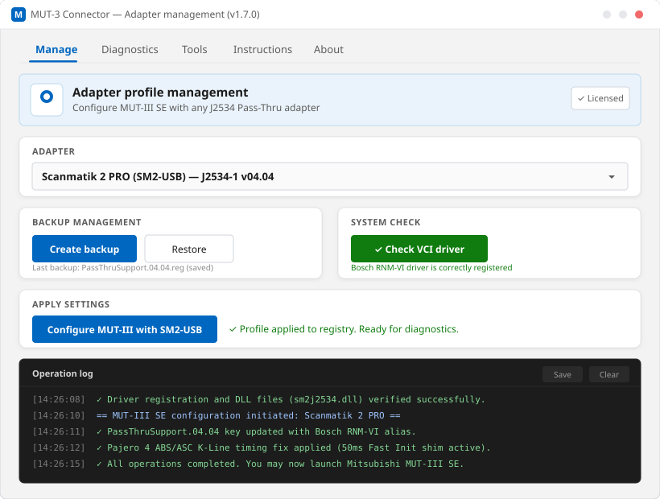

Connect Mitsubishi MUT-III SE with standard J2534 Pass-Thru diagnostic adapters in one click.
One-time purchase • No subscription • Delivered to your email within 12–24h

MUT-3 Connector is a dedicated utility engineered for automotive technicians, diagnostic specialists, and Mitsubishi enthusiasts. It automates the complex registry configuration required to make Mitsubishi MUT-III Special Edition (MUT-III SE) communicate seamlessly through universal J2534 Pass-Thru hardware interfaces instead of expensive proprietary VCI hardware.
Unlike manual registry editing, which is prone to typos and system instability, MUT-3 Connector provides automated profile switching, automatic backup and restore points, comprehensive pre-flight driver verification, and specialized shims for known vehicle protocol quirks.
Engineered specifically for Mitsubishi vehicle diagnostics and coding.
Instantly links your installed J2534 device driver to MUT-III SE registry keys (PassThruSupport 04.04 and 05.00) without manual .reg hacking.
Automatically creates a clean registry snapshot before applying changes. Restore your original system settings with a single button click.
Verifies the presence and integrity of the original Bosch RNM-VI / VCI-3 driver required by MUT-III SE, with direct download and install guidance.
An isolated diagnostic test that verifies driver registration, 32-bit DLL loading, and live hardware USB handshake before you launch MUT-III SE.
Includes an integrated proxy shim applying specialized 50ms fast-init timings to reliably communicate with Pajero IV K-Line ABS/ASC modules.
Built-in service to download, verify SHA-256 checksums, and automatically install the official firmware database archive for MUT-III SE reprogramming.
Inspects declared hardware capabilities: CAN, ISO15765, ISO9141 (K-Line), ISO14230 (KWP2000), J1850 PWM/VPW, and extra protocol channels.
Runs strictly offline on your diagnostic laptop. No external telemetry, no background cloud calls, and no data collection.
Built with modern Windows 11 Fluent 2 design language for clean, distraction-free shop use.
Everything needed to configure and run your diagnostic setup.
A perpetual non-exclusive license to use MUT-3 Connector on your computer without recurring fees or expiration dates.
A digital cryptographic signature generated specifically for your computer's Hardware ID (HWID).
Direct download links to the current production release (v1.7.0) with support for both 64-bit and 32-bit Windows systems.
Comprehensive documentation covering driver setup, adapter pairing, backup creation, and troubleshooting recommendations.
Responsive developer email assistance with initial setup, compatibility checks, and diagnostic log analysis.
Windows 10 or Windows 11 (64-bit recommended, 32-bit supported). Administrator privileges required for registry operations.
Original Mitsubishi MUT-III SE installed on the target machine. MUT-3 Connector configures this software.
Original Bosch RNM-VI driver (Tools/VCI-3) installed. The application includes a verification tool to check this.
Official drivers for your J2534 adapter installed from the hardware manufacturer's official website.
A functional, genuine J2534 Pass-Thru diagnostic adapter with USB connection and OBD-II vehicle cable.
Tested and verified J2534 Pass-Thru hardware interfaces.
Tested & Confirmed Adapters:One-time purchase for a lifetime personal license. No recurring fees, no surprise charges.
One-time payment • Lifetime usage on 1 PC
International bank cards (Visa, Mastercard, MIR) from supported countries and issuing banks. Payment processing is hosted securely on Robokassa checkout servers.
Payment availability depends on your issuing bank, country, and international payment routing rules.
How you receive your license key after completing checkout.
Click 'Buy License' and complete payment on the official Robokassa hosted checkout page.
Download MUT-3 Connector, launch it on your diagnostic PC, and copy your unique Hardware ID (HWID) shown on the activation screen.
Reply to your order confirmation email or send an email to alfaslash@gmail.com with your order number and HWID.
Your unique activation key will be generated and emailed back to you. Typical delivery time: within 12 hours (maximum 24 hours).
Typical delivery: within 12 hours. Guaranteed maximum delivery: within 24 hours. Licenses are issued manually by the developer after verifying the payment.
Everything you need to know about licensing, delivery, and compatibility.
You will receive a personal perpetual license key, download links to the current version of MUT-3 Connector, full installation instructions, and email support. Delivery is digital via email.
Licenses are generated and verified manually. Typical turnaround is within 12 hours; maximum delivery time is within 24 hours. If you have not received a reply after 24 hours, check your spam folder or email alfaslash@gmail.com.
No. It is a one-time single payment of $15 USD. The license is perpetual for the activated computer.
The license is tied to the Hardware ID (HWID) of a single workstation. If your motherboard or computer dies, contact support with proof of original purchase for a free reactivation replacement on your new workstation.
Windows 10 and Windows 11 (both 64-bit and 32-bit editions). Both the app and MUT-III SE require administrative privileges to write to system registry keys.
SMS-Soft Dialink and Scanmatik 2 PRO provide the most stable communication with Mitsubishi ECUs. Tactrix OpenPort 2.0 (original) is also supported. Low-cost unbranded clones are not recommended due to firmware issues.
If the software fails to activate or operate due to a confirmed technical bug that our support team cannot resolve within 5 business days, we issue a full refund to your original payment method. Please review our Refund Policy for details.
Double check that the HWID in your email matches the HWID displayed in the activation window without trailing spaces. If an error persists, simply email support and we will generate an updated key immediately.
Get help directly from the creator of MUT-3 Connector.
Typical reply within 12–24 hours for all technical, licensing, and setup questions.
alfaslash@gmail.comCommunity announcements and quick operational assistance.
@mut3connector_supportMonday – Sunday, 09:00 – 21:00 UTC+5 (Yekaterinburg time).
Direct developer response